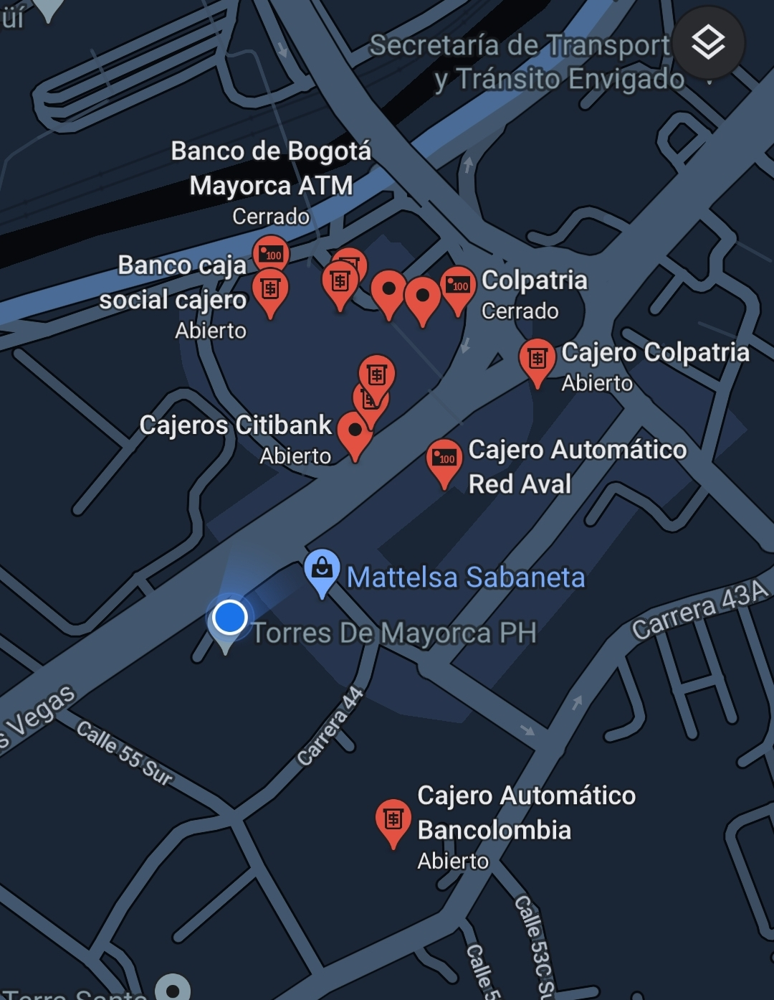

<ion-header>
  <ion-toolbar color="bancolombia" size="large">
    <ion-title color="bluebanco">Redireccionamiento</ion-title>
  </ion-toolbar>
</ion-header>

<ion-content>
  <ion-grid fixed>
    <ion-row>
      <ion-col size="12">
        <app-imagen></app-imagen>
      </ion-col>
      <ion-col size="12" offset-lg="4" offset="1" class="ion-margin-top">
        <div class="ion-text-wrap">
          <ion-text color="bluebanco" style="margin-left: 43%;">
            <h3>Estas son las ubicaciones más cercanas:</h3>
          </ion-text>
        </div>
      </ion-col>

      <ion-col size="10" offset="1">
        <ion-card>
          
        </ion-card>
      </ion-col>

      <ion-col size="12" offset="4">
        <ion-button routerLink="/redirect" color="bluebanco" class="margin-button"> Volver </ion-button>
      </ion-col>
    </ion-row>
  </ion-grid>
</ion-content>
